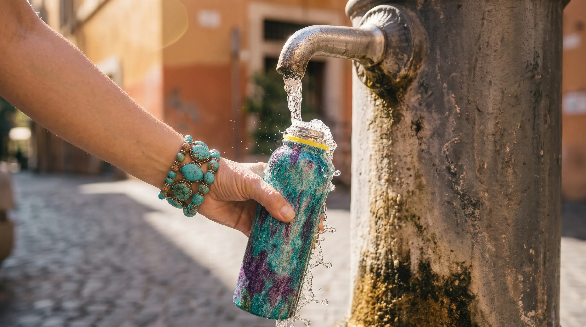
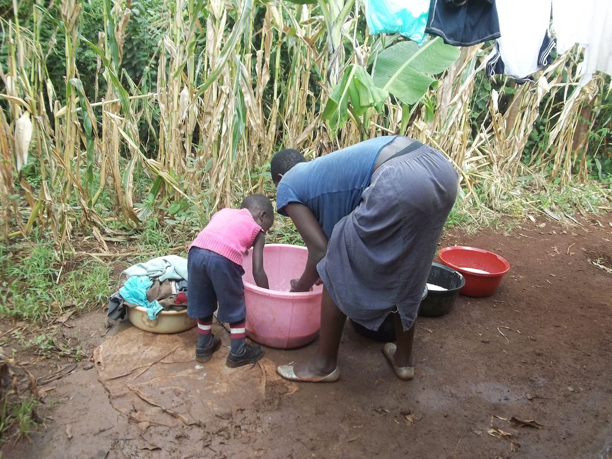
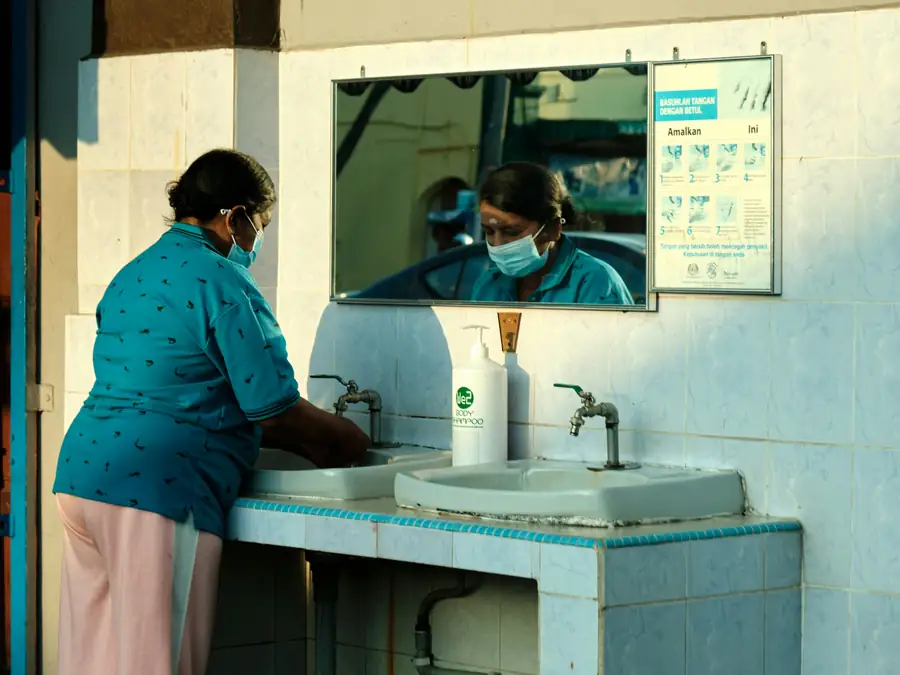

Find Your Scale
Find your scale in three steps
All WISE Scales measure the same concept, the lived experiences of water insecurity. There are versions tailored to understanding the experiences of the entire household or a single individual, and for use in homes, schools, and healthcare facilities.



There’s a family of WISE Scales, one for each setting. Meet the family1Where are you measuring?

Homes
Households and the people in them
Schools
Students and school settings

Health care facilities
Clinics and hospitals
2Whose experience?
The whole household
One answer for an entire household.
Each individual
See how water insecurity differs by gender, age, or other individual characteristic.
3Why are you measuring?
Full scale
The richest picture: classify people into no, low, medium, or high water insecurity.
Short form
Works well when space is tight, but it tells you less.
The scales
Your scale
HWISE
Household Water Insecurity Experiences Scale
For any household, anywhere. Twelve questions asked about the household as a whole, built for population-level surveys like DHS and MICS. You can classify households into no, low, medium, or high water insecurity.
Your scale
HWISE-4
The four-question household short form
The four-question version of HWISE, for when survey space is tight. It takes about a minute and works well when space is tight, but it tells you less.
Your scale
IWISE
Individual Water Insecurity Experiences Scale
For the individual experience, not just the household’s. Twelve questions so that the burden of water insecurity can be compared by gender, age, or other characteristics, and across populations over time.
Your scale
IWISE-4
The four-question individual short form
The four-question short form of IWISE. It takes about a minute and works well when space is tight, but it tells you less.
Recommended by the WHO/UNICEF Joint Monitoring Programme for monitoring progress towards SDG 6

Your scale
School WISE
For students and school settings
Measuring how water insecurity affects children during the school day.

Your scale
HCF WISE
For health care facilities
Measuring whether they have the water they need to operate safely and to serve the patients who depend on them.
Recall period
A twelve-month recall, which smooths out seasonal variations works better for comparing across populations. A four-week recall is better for more precise measures, useful when you’re trying to measure particular outcomes.
Add, don't drop
Additional items can be added, but should not be dropped since doing so breaks comparability with everyone else's data.
The family of WISE Scales
HWISE
In homes · short form HWISE-4
Measures the household as a whole, for national and population surveys.
IWISE
For individuals · short form IWISE-4
Measures each person's experience, so results compare across gender and age.
School WISE
In schools
Measures students' experience of water during the school day.
HCF WISE
In health care facilities
Measures whether a facility has the water to serve patients safely.
Every WISE Scale is available in translation.
New languages are added regularly. Find yours, share yours, or request one that isn't listed yet.